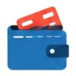

基礎知識
採択はゴールではありません。交付決定、事業の実施、実績報告、額の確定を経て、ようやく入金されます。採択の後の手続きを説明します。
採択と交付決定の違い
「採択」は審査に通ったことを示します。その後、交付申請を行い、「交付決定」を受けて初めて、補助の対象として事業を始められる制度が多くあります。交付決定の前に発注・契約した経費は、対象外になることがあります。

事業の実施中に気をつけること
- 発注・契約・納品・支払いを、交付決定の後に、事業の期間内に行う
- 見積書、発注書、契約書、納品書、請求書、振込の記録を、すべて保存する
- 計画を変えるときは、事前に事務局へ相談・申請する
- 支払いは、現金より振込など記録が残る方法にする


実績報告から入金まで- 事業が終わったら、期限までに実績報告を提出する
- 事務局が書類を確認し、必要に応じて追加の説明を求められる
- 補助金の額が確定する（計画より少なくなることもある）
- 請求の手続きを行い、補助金が入金される

入金の後も続くこと
- 事業化状況の報告：制度によっては、数年間、売上などの状況を報告します。
- 財産の処分の制限：補助金で取得した設備を、一定の期間、勝手に売ったり捨てたりできない決まりがあります。
- 書類の保存：証拠書類は、決められた期間保存します。

書類の保管チェックリスト（実績報告で困らないために）
実績報告では、「いつ・何を・いくらで・どう支払ったか」を、書類で示します。事業を進めながら、次の書類を整理しておくと、あとが楽になります。
- 見積書・発注書（注文書）・契約書・請書（発注の日付が、交付決定の後になっていることを確認）
- 納品書・検収書・工事の完了報告書（納品や完了の日付が、事業期間内であること）
- 請求書と、支払いの証拠（銀行の振込控え、通帳の写しなど。現金払いは、証明が難しいため、制度の決まりを確認）
- 事業の写真（導入前・導入後、設置した機器、完成した成果物など）
- 従業員や外注先に支払う経費がある場合は、その台帳や賃金の記録
- 補助金で購入した財産の台帳（取得日、金額、設置場所）
- これらの書類の保管期間は、制度の決まりに従う（一般に、年単位で保管が求められます）
よくあるつまずきと、対処
- 交付決定の前に発注してしまった：その経費は、対象外になるのが一般的です。事前に、事務局に確認してください。
- 事業内容を変えたくなった：勝手に変えず、変更の承認が必要かを、事務局に確認します。承認なしで変えると、対象外になることがあります。
- 期間内に終わりそうにない：期限の延長が認められる場合もあります。早めに相談してください。
- 支払いの証拠が足りない：現金払いや、他の用途と混ざった支払いは、証明が難しくなります。支払い方法は、事前に確認します。
よくある質問
Q. 採択されたら、すぐにお金が入りますか？
A. いいえ。多くの制度は後払いで、事業を終え、実績報告が認められたあとに、支払われます。それまでの資金は、自分で用意する必要があります。
Q. 実績報告の締切に、間に合わなかったらどうなりますか？
A. 補助金が、受け取れなくなる可能性があります。期限や、延長の可否は、制度ごとに決まっているため、早めに事務局へ相談してください。
 最新情報の確認先
最新情報の確認先
制度の内容は変わります。次の公式情報で、最新の内容を確認してください。
最終更新日：2026年10月10日